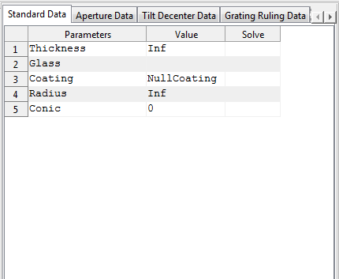
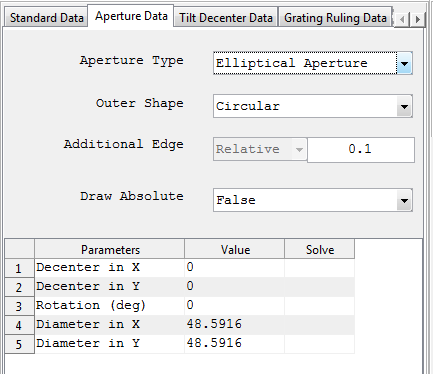
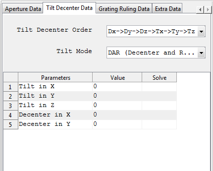
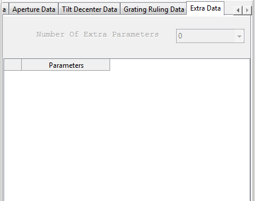

Surface/Component Parameter Panel
It is part of the main panel of the parent window and contains spreadsheet like data editors for entering and editing the surface data of an optical system.
It is organized in to different tabs: Standard data, Aperture Data, Tilt and Decenter Data and Others . Each of the tabs are discussed below.
1. Standard Data
It contains surface data which are required for conventional optical systems.

Row Header |
Description |
Remarks |
Thickness |
To enter the thickness the medium that follows the current surface. The unit of the number will be that specified in the “System Configuration” window. |
All numeric values including 0 and Inf are accepted by the system. Other inputs are not allowed. But entering Inf thickness for surfaces other than the object surface and the last surface of the system will result in an invalid optical system. |
Glass |
To enter the glass name or the refractive index of the medium that follows the current surface. |
Any number value is treated as refractive index of the medium. And any non-numerical text will be treated as the name of the glass from glass catalogue. If the glass name entered exists in the catalogue, it will be confirmed by changing the entered text to upper case. If the system fails to find the glass name entered then, the Glass data editor window will automatically appear to enable user select or enter the new glass. |
Coating |
Name of coating used. "None" for bare glass. |
Any non-numerical text will be treated as the name of the glass from coating catalogue. If the coating name entered exists in the catalogue, it will be confirmed by changing the entered text to upper case. If the system fails to find the coating name entered then, the Coating data editor window will automatically appear to enable user select or enter the new coating. |
Radius |
Used to input the radius of curvature of the surface. The unit of the number will be that specified in the “System Configuration” window. |
All numeric values including 0 and Inf are accepted by the system. Other inputs are not allowed. The surface type and radius fields are interlinked and changing one automatically affects the other. For instance, selecting plane surface for the surface type automatically sets the radius to infinity. And changing the radius to some finite value changes the surface type to Spherical if it is Plane. |
Conic |
Used to input the conic constant of the surface. |
All numeric values including 0 and Inf are accepted by the system. |
NB:
2. Aperture Data
It contains data defining surface apertures.

Field Name |
Description |
Remarks |
Aperture Type |
List of all supported apertures from which one can be selected. |
The default value is Floating Circular Aperture |
Outer Shape |
The outer shape of aperture encompassing the real aperture. This is the one used for plotting the aperture in system layout. |
For simplicity it can only be either elliptical or rectangular. other shapes are not allowed. |
Additional Edge |
The additional edge of aperture used in plotting. |
Currently the relative value can be entered. That is the fraction of the aperture size added as additional edge. |
Draw Absolute |
A boolean value indicating weather to draw the surface aperture absolutely in the layout. If it is set to false, then the aperture of two surfaces separated by glass (singlets) is drawn by taking the maximum size of apertures of the two surfaces. |
|
The following three parameters are also common to all aperture types. |
||
Decenter in X |
Aperture Decenter in X |
Only positive numerical values are allowed |
Decenter in Y |
Aperture Decenter in Y |
Only positive numerical values are allowed |
Rotation (deg) |
Rotation angle of the aperture measured from the +ve y axis. |
The angle is in degree. |
NB: All other parameters vary depending on the type of aperture chosen. So the documentation of each aperture type shall be refereed before using them.
3. Tilt and Decenter Data
It includes tilt and decenter parameters of the surfaces.

Row Header |
Description |
Remarks |
Tilt Mode |
Pop up menu for selecting the mode of the tilt determining the reference coordinate axis after the current surface. |
Currently there are three types of tilt modes supported. DAR (Decenter and Return), NAX (New Axis) and BEN (Bend Axis) |
Tilt Decenter Order |
Order in which tilt and decenter are performed. |
Currently only two orders are allowed. Tilt after denceter and decenter after tilt. |
Decenter X,Y |
Surface decenter in X and Y coordinate |
Non infinite numeric values are allowed. |
Tilt X,Y,Z |
Tilt angle (in deg) about the corresponding axes. |
Currently they are used as successive rotation angles in degrees. |
4. Grating Ruling Data
It includes grating structure data associated with surfaces which support specification of ruled grating.

Row Header |
Description |
Remarks |
Grating Type |
Type of grating ruling (Parallel Plane or Concentric Cylindrical) |
Currently there are three types of tilt modes supported. DAR (Decenter and Return), NAX (New Axis) and BEN (Bend Axis) |
Diffraction Order |
Diffraction order to be considered. |
|
Grating Line per Micrometer |
Grating Line per Micrometer |
|
Linear Coefficient |
Coefficient used to specify the linear variation of the grating line density on the position of the point. |
5. Extra Data
It is used to input extra parameters of the surfaces.

Created with the Personal Edition of HelpNDoc: Easy EBook and documentation generator